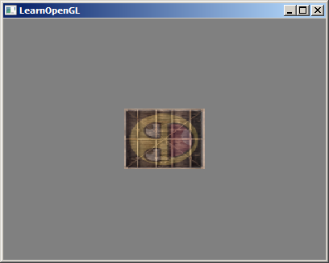
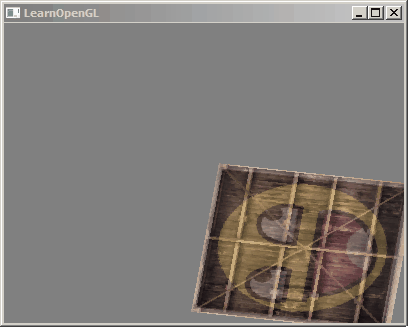

在原版的教程中，此章节有教读者一些矩阵和向量的数学知识简单介绍，但是在这里作者并不打算对它们做介绍，因为作者也是一个学渣文盲，建议读者先查看原教程。因为在OpenGL中的变换几乎都是靠矩阵完成的。
对于在.Net中使用过Graphics的读者来说，这几个函数一定并不陌生。TranslateTransform，ScaleTransform，RotateTransform，这三个函数分别可以对我们当前坐标进行平移缩放旋转。
Graphics.Transformations(float x, float y); Graphics.ScaleTransform(float x, float y); Graphics.RotateTransform(float angle);
或者高级一点的。
Graphics.MultiplyTransform(Matrix matrix);
在3D的世界中我们同样也需要这样的功能。在OpenGL中也有这样的函数，比如glTranslate。但是很遗憾。OpenGL的官方文档中这样描述它：Compatibility-only GL 1.0 features removed from GL 3.2
这是一个上古时期的函数，现在几乎已经不支持，而且我们的教程采用的是3.3的版本。那么没有了这些函数我们要如何变换我们的坐标？那就是矩阵+着色器。而我们要做的就是构造变换矩阵传递给着色器程序。
在原版教程中有如何教我们构造一个旋转矩阵，但是会导致一个问题：万向节死锁(Gimbal Lock)。很难用语言将万向节死锁描述出来，所以这里准备了两个视频bilibiliyoutube。
虽然原版教程中提到了四元数(Quaternion)。但是造成万向节死锁的根本原因并不是因为使用了欧拉角，欧拉旋转本身是没有任何问题，问题在于多轴同时旋转的时候，优先选择哪个轴旋转的问题。而这个问题与其叫做万向节死锁倒不如叫做歧义更加合适。
此教程并不打算讲解四元数，如果实在要问为什么的话。。。。。因为作者也没搞懂😂😂😂😂😂。虽然作者已经从GLM中抄袭了四元数的代码，可作者也并不是很理解如何正确使用。即便在后面的摄像机章节中，作者也是采用的欧拉角，但是可以无死角旋转。
GLM是OpenGL Mathematics的缩写，它是一个只有头文件的库，也就是说我们只需包含对应的头文件就行了，不用链接和编译。是不是很方便？可惜并不能在.Net中使用。但是作者对它进行了部分移植。
接下来就是实践一下如何使用GLM。
首先我们准备一个坐标点(1,0,0)让它位移(1,1,0)个单位。
Vector4F vec = new Vector4F(1, 0, 0, 1); // 构造坐标 Matrix4F trans = Matrix4F.Identity; // 创建单位矩阵 //trans = GLM.Translate(trans, new Vector3F(1, 1, 0)); // 平移 trans.Translate(new Vector3F(1, 1, 0)); // 平移 vec = trans * vec; Console.WriteLine(vec.ToString()); // out: (2, 1, 0, 1)
或许你会奇怪，我们的坐标不是(1,0,0)吗？为什么要使用一个四维向量(1,0,0,1)？还记得在顶点着色器中gl_Position我们也是使用的四维向量吗？首先可以看到我们需要使用一个4*4的矩阵做运算，而一个三维向量是无法和4*4矩阵做运算的，所以我们需要一个四维向量，并且我们也确实需要第四维w分量，也叫齐次坐标。
最终的结果也确实把坐标平移了。当然上面的代码仅仅是演示数学运算后的效果，并没有实际的应用到OpenGL中。接下来我们使用上一章节的案例进行更改。
让我们来旋转和缩放之前教程中的那个箱子。首先我们把箱子逆时针旋转90度。然后缩放0.5倍，使它变成原来的一半大。我们先来创建变换矩阵。
var mat = Matrix4F.Identity; mat.Rotate(90, new Vector3F(0, 0, 1)); mat.Scale(new Vector3F(0.5f, 0.5f, 0.5f)); // mat = GLM.Scale(...) * GLM.Rotate(...); // 如果使用下面的代码 矩阵乘法顺序要和我们想要操作的效果反过来。
在作者移植的GLM中变换函数接受的是角度不是弧度，在GLM中提供了两个转换函数GLM.Radians(float)GLM.Degress(float)。
接下来就是将这个矩阵传递给着色器。
#version 330 core
layout (location = 0) in vec3 dotPos;
layout (location = 1) in vec3 dotColor;
layout (location = 2) in vec2 dotTexCoord;
out vec3 DotColor;
out vec2 DotTexCoord;
uniform mat4 mat_transform; // 接受变换矩阵
void main(){
gl_Position = mat_transform * vec4(dotPos, 1.0);
DotColor = dotColor;
DotTexCoord = dotTexCoord;
}
由于gl_Position是要传递给下一个步骤的坐标点，而dotPos是我们原本传入的坐标点。但是赋值给gl_Position的时候与我们传入的矩阵mat_transform做了一次运算，所以坐标点会发生改变。
通过program我们可以将我们的矩阵传递给着色器。
program.SetUniform("mat_transform", mat);
然后你会看到如下的效果。
接下来我们尝试在渲染循环中修改代码。
while (!GLFW.WindowShouldClose(window)) { processInput(window); GL.ClearColor(.5f, .5f, .5f, 1f); GL.Clear(GL.GL_COLOR_BUFFER_BIT); // GL.BindVertexArray(vao); var mat = Matrix4F.Identity; mat.Translate(new Vector3F(0.5f, -0.5f, 0)); mat.Rotate((float)(DateTime.Now.Ticks / 100000 % 360), new Vector3F(0, 0, 1)); program.SetUniform("mat_transform", mat); GL.DrawElements(GL.GL_TRIANGLES, 6, GL.GL_UNSIGNED_INT, IntPtr.Zero); GLFW.SwapBuffers(window); GLFW.PollEvents(); }
运行后你会看到一个旋转的图形。
可以看到通过矩阵，我们可以很方便的就实现坐标的变换，所以说矩阵在图形领域是一个很重要的工具。我们可以定义无限数量的变换，而把它们组合为仅仅一个矩阵，如果愿意的话我们还可以重复使用它。在着色器中使用矩阵可以省去重新定义顶点数据的功夫，它也能够节省处理时间，因为我们没有重新发送新的顶点坐标到GPU中（这是个非常慢的过程），所有的变换都在着色器中通过Mat4*vec4完成的。